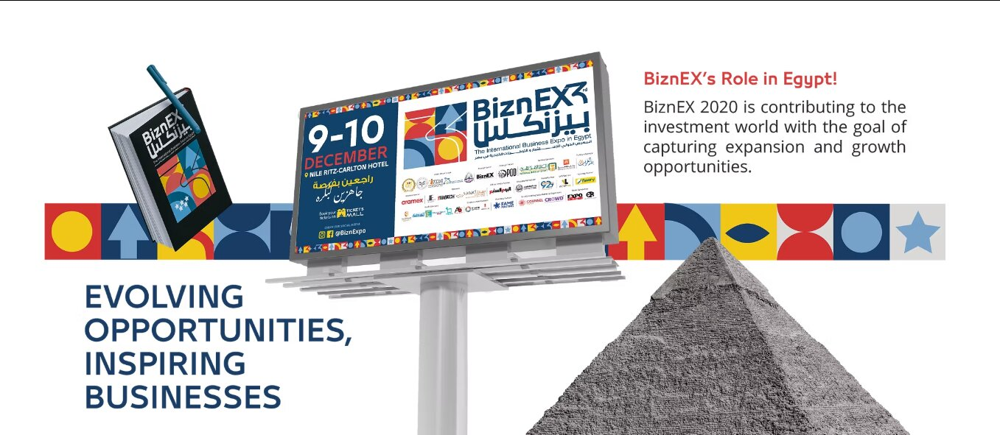
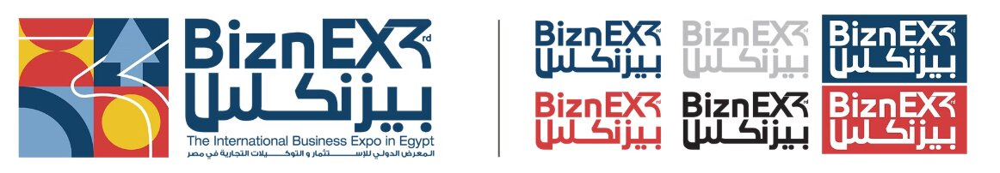
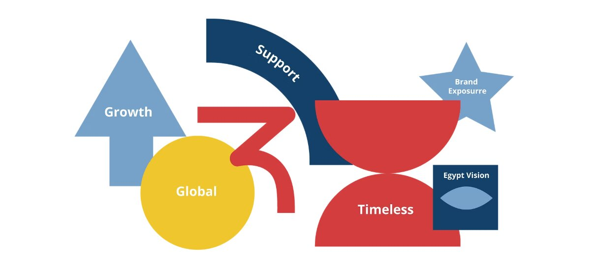
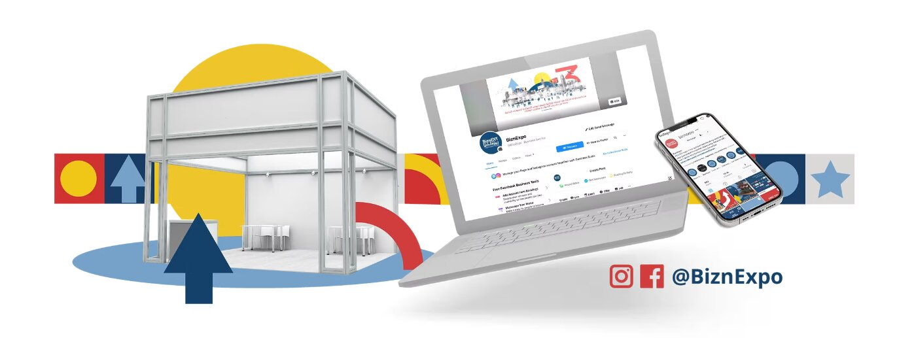
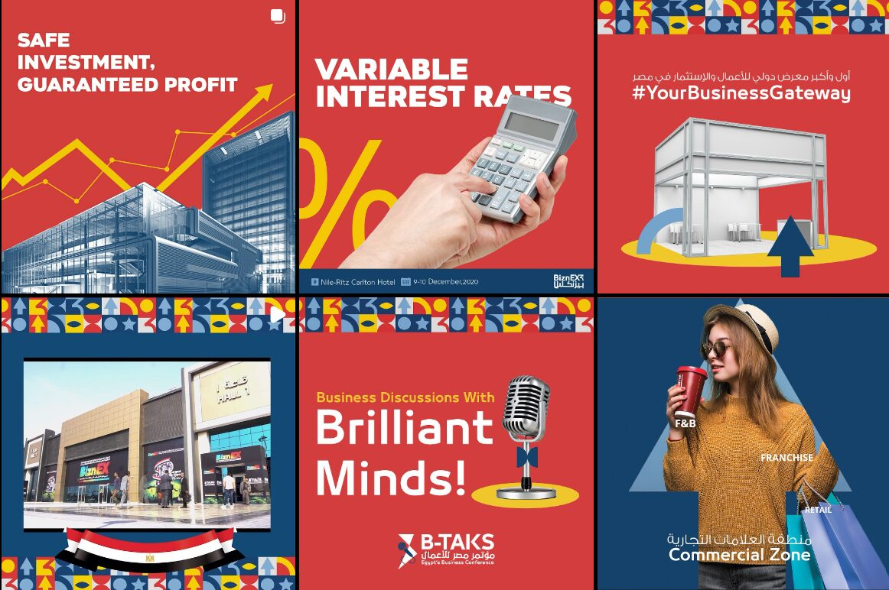
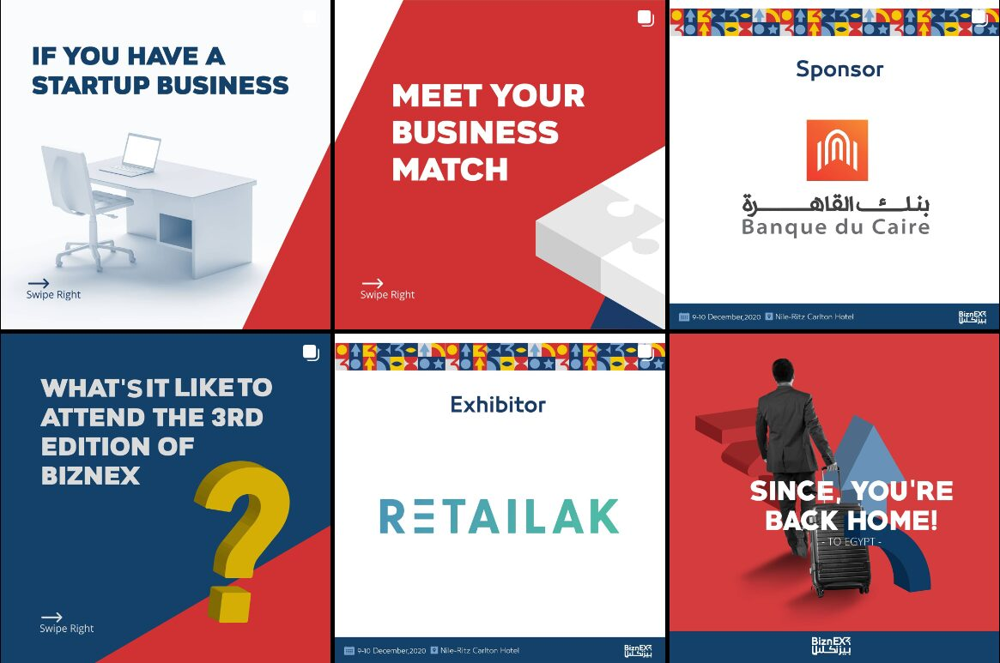
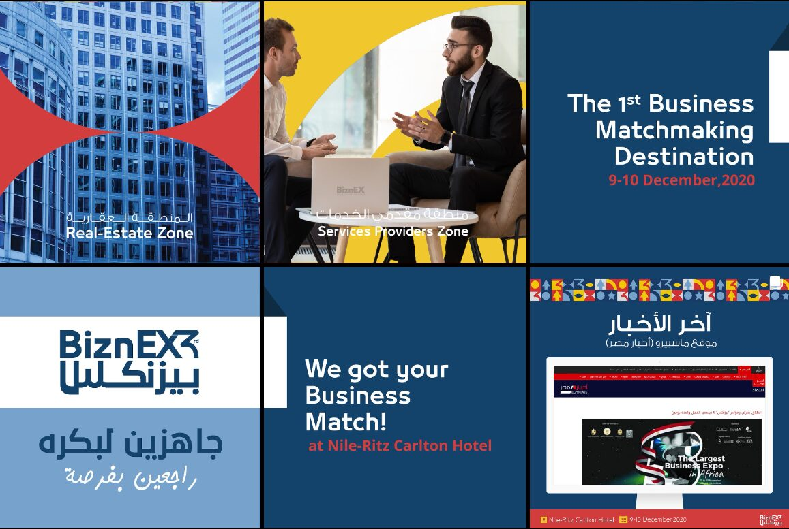
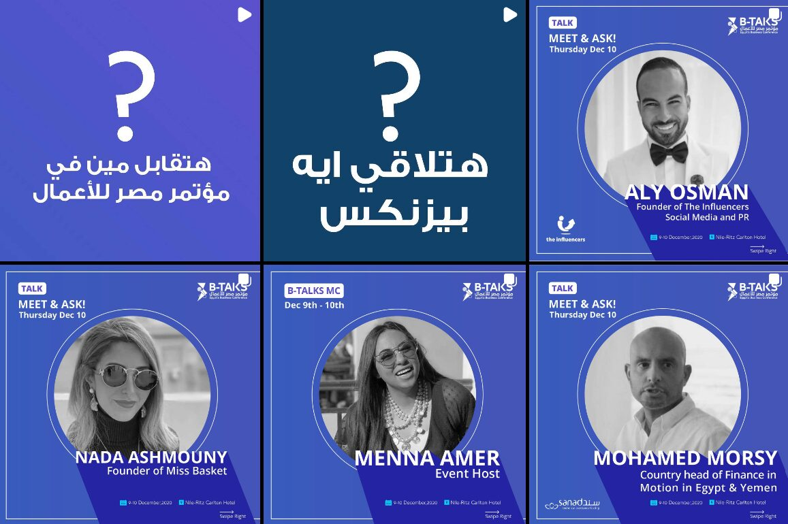
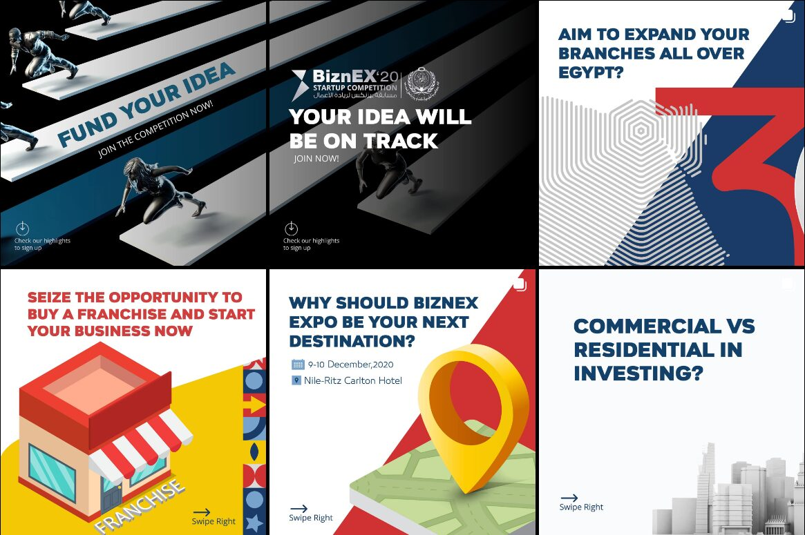

02 · Events · Cairo, Egypt
Find Your Business Match
BiznEX — Egypt's annual business-matchmaking expo, held under the patronage of the Prime Ministry and the Ministry of Investment and International Cooperation. I came in during the public launch of this edition, right after 2020, when the brand needed both a rebuild and a reason for anyone to trust it again.

The challenge
Every business had spent the months before the event in regression — nobody felt safe investing in anything. BiznEX leaned on its government-ministry backing to keep its own exposure and credibility intact, but the brand itself had almost no visual identity to speak of: years in the market, only two of them running the event well. I came in during the public launch phase, brought on for guidance on everything brand-related — especially messaging — at the exact moment the event needed to reconcile 2020's regression with its own vision.
The approach
I worked closely with the design team on a new brand identity and logotype built to carry consistency, relevance, credibility, and appeal — speaking to business owners as people who needed a reason to feel safe again, not just an invitation to an event. The idea leaned honestly on the audience's own fear: don't settle for just staying afloat — invest while you still can, and go after the next opportunity from a position of strength, not weakness. That became the event's tomorrow-facing slogan: 2020 was yesterday, disappointing; tomorrow was the recovery every entrepreneur was owed.

The concept
That rebuild is what "Find Your Business Match" was built to carry. The challenge was never awareness — it was matching the right brand to the right investor fast enough for it to matter. I borrowed the mechanic from an unlikely place: a dating app. "Find Your Business Match" reframed brand-investor discovery as a deliberate pairing process, not a trade-show crowd to wade through — content, on-site signage, and digital promotion all carried the same conceit, built on top of the new brand identity rather than replacing it.
The structure
Three zones carried the concept, each with its own one-word promise: Commercial Zone — Growth, for brands seeking franchising, exporting, and partnership opportunities across the Middle East, Gulf, and Europe. Services Providers Zone — Support, for experts and service providers. Real Estate Zone — Timeless, for top-level real estate professionals offering end-to-end service.

The channels
Social ran across three platforms, each doing a different job: Facebook carried lead generation, LinkedIn handled both awareness and lead gen as the fully B2B channel, and Instagram stayed pure awareness with educational content. Print and catalogue materials extended the same brand system into physical collateral for the room.

The execution
Full campaign management and content production, on-ground and digital. I led a small team and owned both the creative concept and its execution — from the matchmaking idea through the assets that carried it into the room.





The expo recap, cut for socials.
Sherif Rostom, HR & Board Member at BiznEX Holding, is a real testimonial for this work — featured on the Home page.